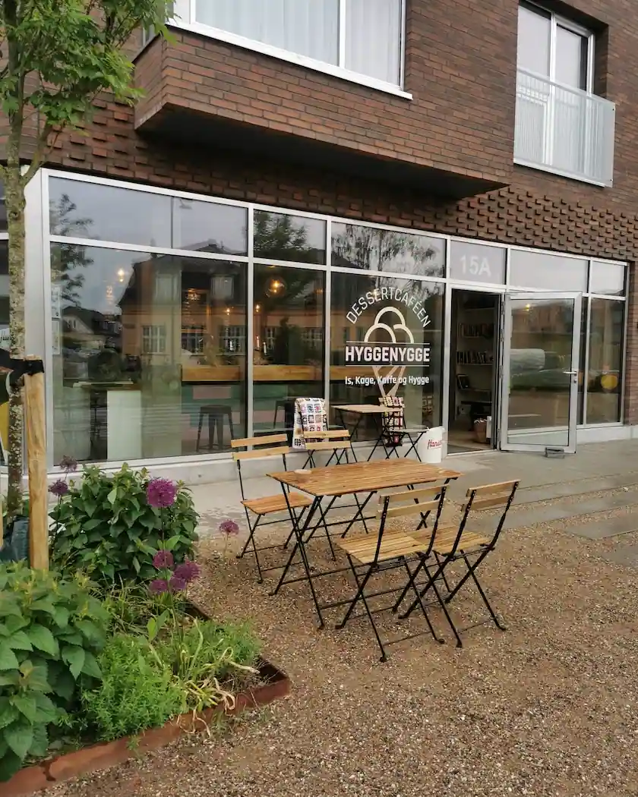
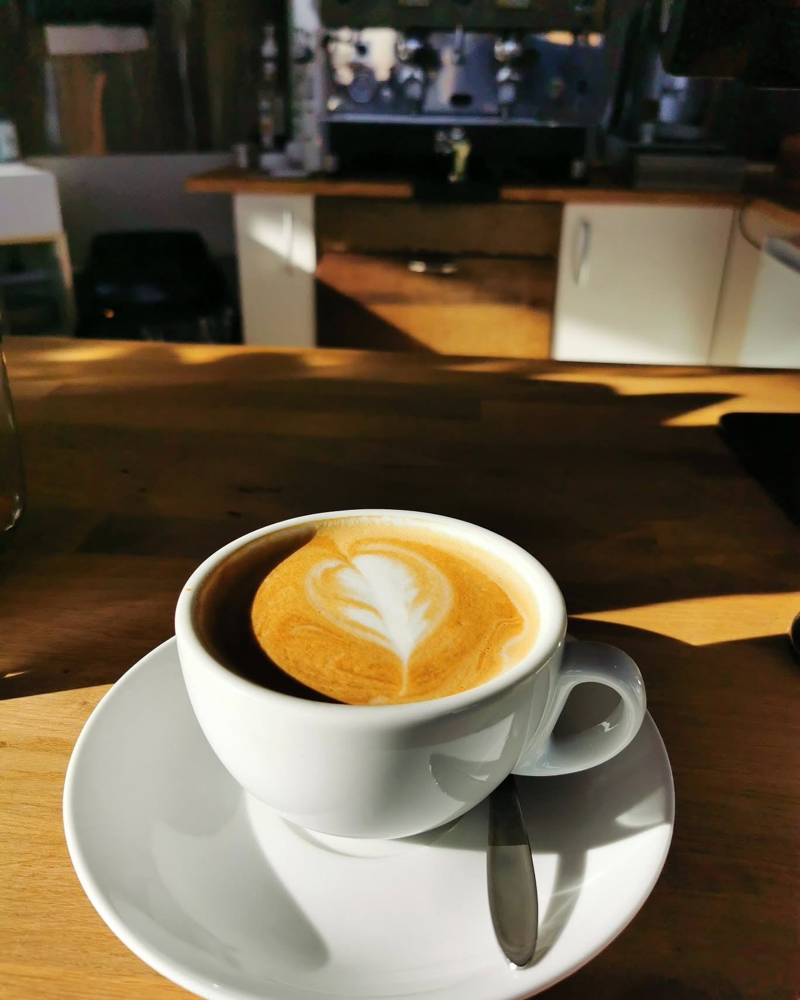

Hyggenygge
Café Hyggenygge er en hyggelig og familievenlig café i Valby, tæt på København Syd Station. Caféen har gode faciliteter for både børn og voksne og er derfor velegnet til familier og forældregrupper. På menuen findes blandt andet kaffe, kage, sandwich, boller med ost og økologisk is. Der bliver desuden afholdt forskellige arrangementer og aktiviteter for både børn og voksne. Caféen lægger vægt på en afslappet og hyggelig atmosfære, hvor der er plads til hele familien. Det er derfor et oplagt sted til en hyggelig caféoplevelse med venner eller familie.

Vores kaffe
Hyggenygge tilbyder kaffe fra forskellige lande, som hver har sin egen smag og karakter. En af vores kaffer er El Turpial Laurina Natural fra Colombia, som er lavet af den særlige Laurina-kaffesort. Vi har også La Higuera fra Peru, som giver mulighed for at opleve kaffe fra peruvianske kaffebønder. Kaffens oprindelsesland, sort og forarbejdning kan have stor betydning for, hvordan den smager. Derfor kan kaffe både være sød, frugtig, syrlig eller mere fyldig. Ved at prøve kaffe fra forskellige områder kan man opleve, hvor stor forskel der faktisk kan være på kaffebønner.
